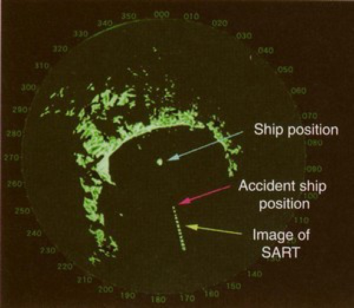

Transpondeur radar de recherche (SART)
Installation fonctionnement
La ou les balises SART sont généralement installées à l'intérieur du navire et doivent être emmenées en cas d'abandon.
Un interrupteur permet leur mise en marche. elles doivent être installées à l'extérieur de l'embarcation ou de radeau.
Lorsqu'elles détectent un signal radar provenant d'un autre navire, elles émettent à la même fréquence que ce radar un signal caractéristique qui apparaît sur l'écran radar du navire.

Tous les navires équipés d'un radar de navigation peuvent ainsi participer à des opérations de recherche.